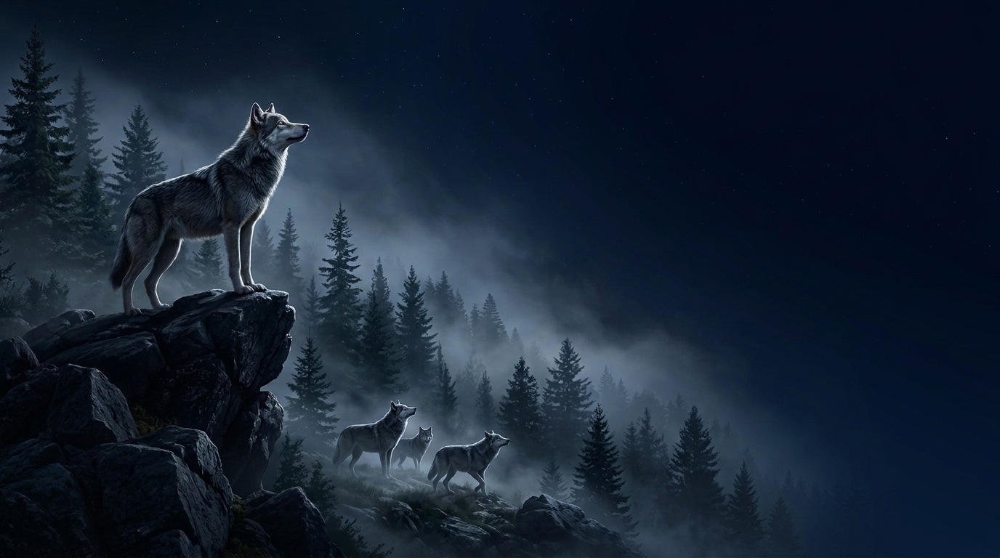

E-commerce
&
IT Specialist
Jakub Górski
Mensa Member
E-commerce Specialist
AI-assisted Development
IT Specialist
PHP Developer
Sales Manager
Psychologia w biznesie
Neuromarketing
BVB fan
20+ lat doświadczenia
Dev Tools
Claude Code (CLI / AI-assisted coding)
Google AI Pro
PHP
JS
NODE
REACT
VS Code
Many others...
Mózg
Doświadczenie/XP:
IT Service
Z-ca kierownika w salonie sprzedaży
Freelancer
Handlowiec B2B
Specjalista ds. E-Biznesu/PHP Developer
Certyfikaty
✓
Cambridge FCE Certificate
✓
Ratownik wodny i górski
WOPR & GOPR
✓
PHP Developer
✓
Google AI Pro Certificate
Google (Coursera)
✓
Indie Game Developer (Personal Projects)
✓
Wędkarz, grzybiarz, akrobata...